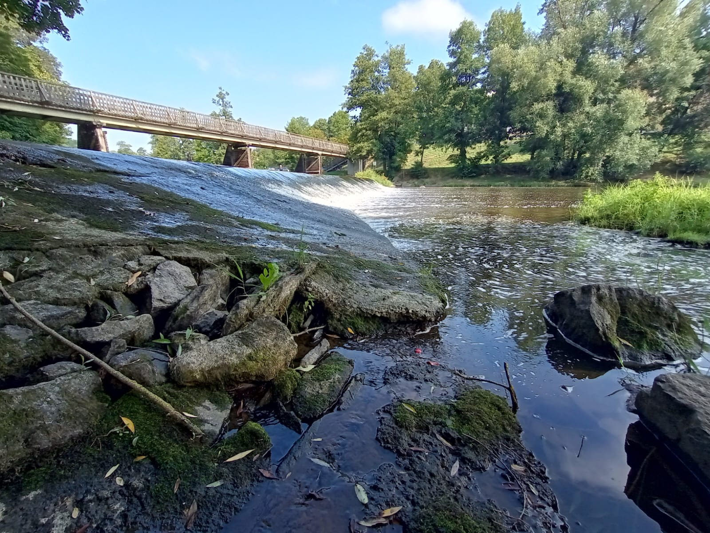
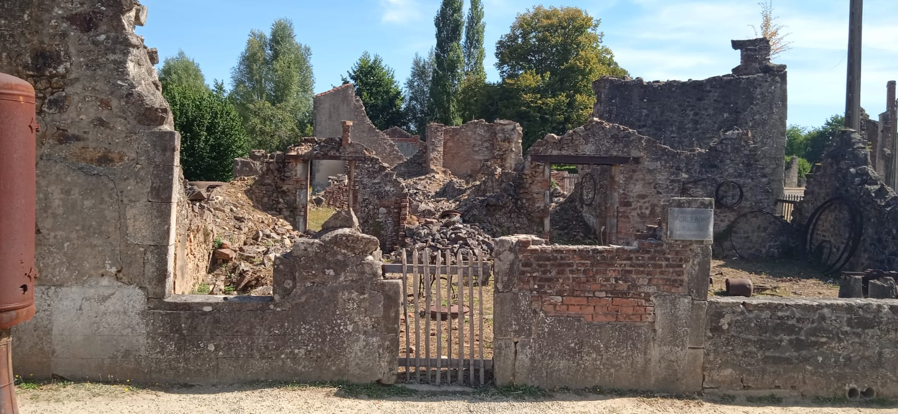
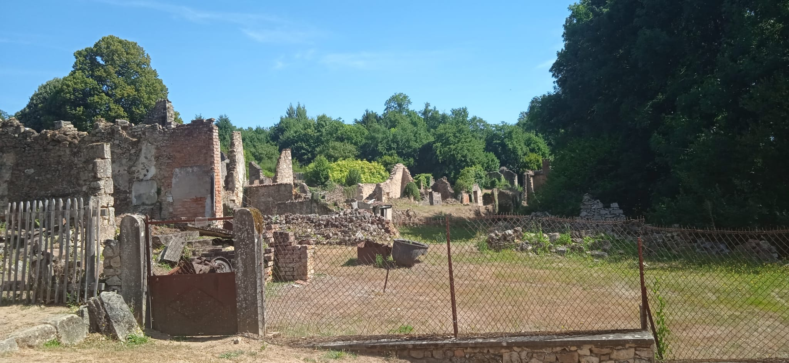
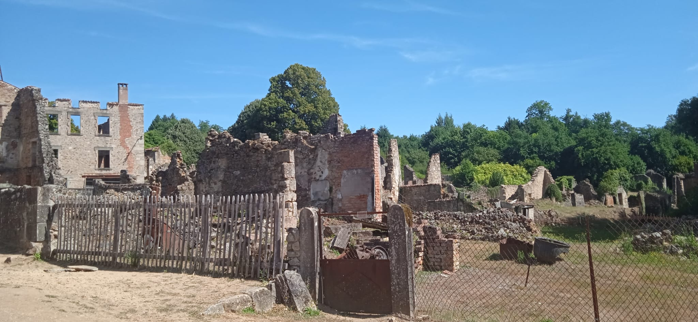

Het cultureel zelfportret van Tiemen
Inhoud:
- - Fotografie & Nieuwe Media
- - Dans
- - Architectuur
- - Film
- - Muziek
- - Theater
- - Beeldende kunst en design
Fotografie & Nieuwe Media
Fotografie
Ik vond het best wel leuk om foto's te maken, de uitleg daarover bijvoorbeeld bij TO en een gastles vond ik saai.
Ik heb foto's gemaakt met mijn telefoon maar ook met een klein cameraatje die ik ooit een keer gekregen heb.
Ik heb verschillende soorten foto's gemaakt. Van portretten tot foto's met duidelijke lijnen tot random foto's. Hieronder zijn een paar foto's die ik gemaakt heb:
18-08-2023
18-08-2023
09-08-2022
Nieuwe media
In de onderbouw in Assen hadden we een "vak" en dat heette talentontwikkeling (TO).
Het bestond uit 6 modules verspreid over drie periodes.
Elke module bestond uit 3 workshops van een bepaald onderwerp. Op een gegeven moment kreeg ik de Virtual Reality workshop(s). Die vond ik best wel leuk omdat het bij me past en ik dat soort dingen ook erg leuk vind om te doen. Het was eens wat anders als dat we normaal gesproken hadden bij TO dus was het ook minder saai en verfrissend
Dans
Aan het einde van het schooljaar op de basisschool hadden we altijd (met uitzondering van de corona-jaren) een event. Daarvoor moest je een dansje instuderen. Ook heb ik in de tweede klas voor LO een serie danslessen gehad. Ik vond het bij beide dingen nooit echt leuk, ik deed het omdat het moest, omdat het niet het gene is wat ik leuk vind.
Architectuur
Elke keer dat wij op vakantie gaan, bezoeken wij ook wel een keertje een oud kasteel of een oude kerk. Het is eigenlijk bijna een standaard dat wij naar zoiets gaan in een vakantie.
Afhankelijk van of het kasteel/de kerk interessant is vindt ik het leuk of juist niet.
Voorbeeld: Een kasteel is heel oud en heeft ook nog een leuk verhaal + veel objecten dan vind ik dat leuker dan een oude ruïne waar niets te vinden is.
We zijn ook naar oude dorpjes geweest die te maken hebben met de tweede wereld oorlog omdat wij als gezin daar een grootte intresse voor hebben. Zoals dit dorpje in Frankrijk (Oradour Sur Glane) die door de Nazi's tot de grond is platgebrand en waarvan de bewoners vermoord zijn:
09-08-2022
09-08-2022
Film
Ik ben niet zo'n film persoon dus ik kijk niet zo vaak films. Als ik dat wel doe is het meestal een tekenfilm. Die vindt ik meestal wel leuk ook al is het niet echt iets voor mijn leeftijd.
Ik weet niet meer welke films ik allemaal gekeken heb. De eerste film die ik ooit keek is namelijk al zo lang geleden dat ik niet meer weet waar hij over ging. Het enige wat ik me ervan herinner is dat ik hem best wel eng vond. Dat is bij mijn ook vaak het probleem met films: Ik vind films wel leuk om te kijken maar veel films vind ik eng en dat is waarom ik niet veel films kijk. Het aantal staat tot nu toe nog op 3 films in de bioscoop.
Muziek
Het meeste muziek dat ik mee krijg is de minder dan een minuut stukjes van tiktok. Natuurlijk ook bij de kerk. De inhoud van de muziek in de kerk vind ik natuurlijk wel goed maar de muziek zelf, de klanken, vind ik een beetje outdated. Daarnaast luister ik af en toe naar pop muziek via youtube of spotify. Dat vind ik wel leuk ook al doe ik het niet vaak. Klassieke muziek kan mooi zijn maar de meeste vindt ik saai.
Theater
Ik ben nog nooit naar een theater geweest. In tegenstelling to andere basisscholen had mijn basisschool geen musical maar een eindfilm. Daar ben ik eerlijk gezegd wel blij mee omdat ik een hekel heb aan in de spotlight staan. In plaats daarvan was alles van te voren opgenomen waardoor ik me daar wel beter bij voelde. Ik had ook een leuke rol dus dat was ook wel prima. Dat was mijn
Beeldende kunst & Design
Beeldende kunst
Ik ben naar veel musea geweest o.a. oorlogsmuseums. Alleen de oorlogsmuseums vond ik interessant, de meeste vond ik saai. En bij de laatste oorlogsmuseum (Augustus 2023) dat ik ben geweest, was er veel te veel informatie die wel interessant was maar het was gewoon teveel. In groep 8 was het ook de bedoeling dat we naar het rijksmuseum zouden gaan maar dat ging niet door vanwege corona.
Design
Ik draag normaal gesproken alleen merkkleding voor voetbal of mijn schoenen zijn van een bepaald merk. Dat komt omdat ik het niet nodig vindt om heel dure kleding te kopen. Daarnaast maakt het mij niet uit wat ik aan heb, als ik het maar mooi vindt. Zo veel ervaring heb ik voor de rest niet met design. Behalve misschien mijn telefoon, die heb ik altijd van een paar dezelfde merken (Xiamo, Motorola red.).s